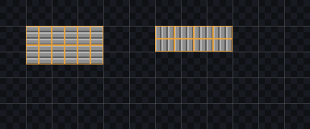

Papercutthe test project · Valley
Search settings
Tagging is undoable while the section is open; the rest of the form is not.
Materials
5 materials · priority top to bottom · 72 of 75 arrangements drawn
 Grass
meets
Grass
meets
 Stone
on a ramp3 of 14 arrangements drawn
Working on
200%
Stone
on a ramp3 of 14 arrangements drawn
Working on
200%
By priority
Grass12/15 Dirt15/15Stonemeets15/15
Dirt15/15Stonemeets15/15 Sand15/15
Sand15/15 Path15/15
Path15/15The icons are the faces a material has art for: floor, wall, ramp.

runs north–south · 1 × 1½
runs east–west · 1½ × 1
A ramp's slope is √2 ≈ 1.41 tiles long for one tile of run. Proposed: draw it at 1½, which sits on the half-tile grid every sheet already has, and let the mesher take up the 6 %. Which way the long side runs depends on the ramp's direction, so a ramp tag says which: the same steps drawn running down the sheet are not the same art turned on its side.
Surfacethe slope · 1 × 1½ along its run, so it runs north–south or east–west
Headwhere it meets the plateau · 1 × ½proposed
Footwhere it lands · 1 × ½proposed
Sidethe triangle under the slope, cut from the wall's art todayproposed
Raila ramp's fringe: stood along its open sides, sheared to the slope · 1½ × ½proposed
Preview
Drag to orbit · updates as you tag
Grass @ ramp · the grid shows ramp cells where the sheet has them · click or drag over corners · right-click for nothing
Tagging
 ground.png16 × 16 tiles · 16 px · 240 tagged▾
ground.png16 × 16 tiles · 16 px · 240 tagged▾Stairs are ramp art for now: steps drawn on a ramp's tiles, over a slope that stays smooth. A stair that steps its geometry is a later question.
Grass
45°
0 px
Meeting Stone
Drawn in the wall, because that is the face the boundary is on. 3 of 14 arrangements drawn; this block writes the other eleven.